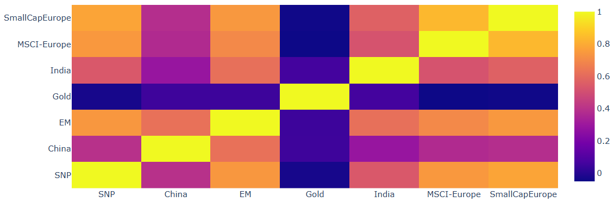

Thesis
Overview
We first discuss the general goal of this investment portfolio and where I see it going in the future. The main goal is to provide a stable RoI over a mid- to long-term time horizon, think 10-15 years or longer. The goal is not to outperform the general market, but to provide a better risk-adjusted return basis than traditional equal weights (= buy-and-hold) portfolio.
Asset Universe
I have chosen a simple basket of Exchange Traded Funds (ETFs) for contents in the portfolio, for a few reasons. First, and most importantly, is the automatic guaranteed diversification one gets when investing into a fund instead of picking stocks manually. The latter is less ideal because of its inherent risk of not diversifying enough, seeing as the goal for this investment philosophy is to reduce tail-risk.
In terms of which ETFs I will be considering for the portfolio; I have gone for a diversified basket of funds, spreading accross different markets across the world, including one for the US, European, Chinese and Emerging market(s), and also including European smallcap stocks, to further diversity in this region (the MSCI Europe and Small Cap ETF cover a mostly disjoint part of the EU-market). Below is an overview of the allocations and additional reasons why these allocations make sense (even though they are determined by the weights optimizer):
US: 11% - Global growth - technological innovation and large market
Europe Large cap: 12% - cyclical complement to US assets, value
Europe Small cap: 12% - size premium and lower US correlation
Asia/EM: 23% - Growth potential + offset to US + European markets
Gold: 22% - Crisis hedge, negative or very low correlation with equity

Before we present the chosen portfolio strategy, we first discuss some metrics and ideas for weight optimalization I have considered to construct the general strategy.
Measures to consider when optimizing asset weights
Value at risk
This measures the amount the portfolio could lose in percentage loss in the worst \((1-\alpha)%\) cases.
Expected shortfall
This measures the expected loss of the portfolio in the worst \((1-\alpha)%\) cases. This measure improves upon the previous value-at-risk metric in the way that it averages across tail-values, whilst the value at risk does not account for the maximum possible loss.
Sharpe ratio
The Sharpe ratio measures how much return a portfolio generates per unit of total risk. A higher Sharpe ratio means one is being better compensated for the volatility one takes on.
Sortino ratio
The Sortino ratio is similar to the Sharpe ratio, but it only treats downside volatility as risky. That makes it more appropriate when one cares more about losses than upside swings.
Mean returns
Mean return is the average return over the sample period. It is useful as a simple performance measure, but on its own it is incomplete because it does not say anything about risk.
Ideas for weights optimalization
Factor investing
Factor investing aims to explain asset returns through systematic sources of risk and return rather than treating each ETF as an isolated object. In this project, I use factor returns to estimate each ETF’s exposure to broad market, size, and value-like effects, and then combine those exposures with the ETF return signal itself. The purpose is to make the portfolio construction more informed by economic structure, rather than relying only on raw historical returns.
Regime switching
One could consider differentiating between market regimes by looking at asset correlations, volatility, and recent mean returns, and switching ones weight-allocation strategy by, for example, choosing equal weights when the probability of being in a potential bear market increases. The first, relatively simple, idea was to simply switch to equal weights when the average correlations between the assets were above some predetermined threshold (which is based on the mean correlation over a large time window), or when volatility was higher than some threshold.
CVaR drawdown punishment
Using a certain weight parameter, one could punish choosing weights that increase the CVaR metric. The purpose of this is to punish having potential large drawdowns, and to minimize the probability of losing a great deal of the portfolio in tail-events.
Introducing price momentum and volume trends
The idea here is to slightly increase shorter-term weight allocation towards assets that show a relative inclination to outperform in the short(er)-term, based on measurements of the recent volume and price movements (compared to a longer time horizon). In my implementation, one takes the mean of a few different metrics that measure, amongst included, the recent volatility, volume and momentum. To try and reduce noise from the data to make correct descisions, I use a rank-transform on the resulting measurements.
Weight-concentration punishment
One should also punish picking weights that concentrate too greatly towards only a few assets. One does this by subtracting a multiple of the term \(\sum_iw_{i}^2\) from the reward function. This works because the function \(f(w)=\sum_{i}^nw_{i}^2\) gets minimized when \(w_i=1/n\), when being under the restriction that \(\sum_iw_i=1\).
Volatility punishment
This is clear: one should also punish choosing weights that make the portfolio overly volatile to price changes.
Procedure for generating weights
I decided to use a machine-learning based approach, namely to work with a gradient descent step for the variable that we want to choose (the weights in this case). The loss (or reward) function should then be a chosen composition of the previously discussed factors.
Calculating trading costs & adjusting for fees
FEES STRUCTURE
| Component | Cost | ETFs |
|---|---|---|
| IBKR Commission | 0.05% of trade value (min €1.50, max €49) | All liquid ETFs |
| Exchange Fee | CHF1.50 + 0.015% (EBS/SIX) | ~€1.60 + 0.015% |
| Clearing Fee | CHF0.38 flat | ~€0.40 |
| Total Fixed | ~€3.50 minimum | Per trade |
| Total % | 0.065% + €3.50 | For €10k trade = 11.5bps |
Formula: cost = max(€3.50, 0.00065 * trade_value)
| ETF | Typical Spread | Half-Spread Cost |
|---|---|---|
| CSPX (S&P500) | 0.01-0.02% | 0.75bps |
| EIMI (EM) | 0.08-0.12% | 5bps |
| CNYA (China) | 0.15-0.25% | 10bps |
| INR (India) | 0.20-0.35% | 13bps |
| Gold (XAD5) | 0.05-0.08% | 3.5bps |
| Average | 0.10% | 6.5bps |
Based on the above approximate fee structure for my broker, we of course account for transaction costs in the training of the weights, and reduce the total portfolio gain by this amount (in percentage points). They are explicitly included so that the strategy is evaluated on net performance rather than theoretical gross returns. This matters because frequent rebalancing, especially in ETFs with wider spreads, can materially reduce realized performance. The cash weight is therefore treated as part of the portfolio construction problem, not as an afterthought.
Backtesting and comparison vs. other strategies
When determining which optimalization methods work and which don't, I have ran several backtesting sessions, and also compared the performance with some well-known and classic portfolio optimalization methods, such as the standard equal-weights portfolio, a risk parity approach, and running the version with and without accounting for factor returns.
Strategy summary
Over the time period of 3-4 months, we rerun the weight optimalizer using the previous frame of data, and choose weights based on the results of the solver. A human should then of course verify whether this selection of asset weights makes sense, and then potentially rebalance the portfolio if the weights vary significantly compared to the weights one had before.
On what basis should be determine the asset weights? After rigorous testing and running simulations, I have found that the healthiest mix of measures to consider include the following: -Optimizing for risk-adjusted expected return -Punishing heavy tail-probabilities (CVaR) -Punishing concentration of weights -Punishing large turnover amounts -Accounting for somewhat recent momentum and volume indicators
Limitations and comparison vs. Equal weights
It is worth noting that while the strategy I have constructed can definitely outperform on a risk-adjusted basis, it is still possible that equal weights will outperform (although slightly) in the case of bear-markets. This is most likely due to optimalizations the procedure makes that don't account enough for the potential large market downturns. It is possible to reduce this inherent shortcoming of the strategy, but not without sacrificing risk-adjusted returns, which is ultimately what this portfolio is built for.